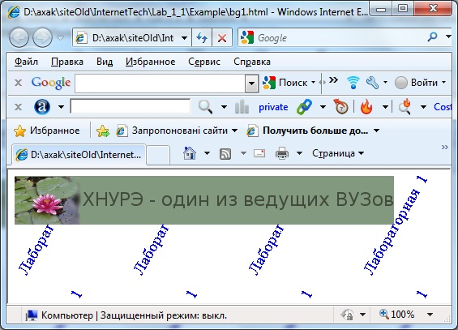

1.4.3 Создание баннеров для web-документов
Одним из самых популярных и эффективных способов привлечения посетителей web-страницы является баннерная реклама. Баннер (banner) - рекламный заголовок - графический элемент, который по договоренности или за плату располагается на определенных web-серверах, причем нажатие мышью на вышеупомянутый элемент автоматически приводит пользователя на сайт рекламодателя.
Как правило, баннер представляет собой прямоугольное графическое изображение в формате GIF или JPG, хотя встречаются баннеры, созданные с помощью JAVA, ShockWave и т. д. В настоящее время не существует официально принятых стандартов по размеру баннеров, но наиболее распространены следующие размеры баннеров (в пикселах):
-468x60; 460x55 - полноформатный горизонтальный;
-392x72 - горизонтальный;
-234x60 - полуформатный;
-120x240 - вертикальный;
-125x125 - квадратный;
-120x90; 120x60 - кнопка;
-88x31 - микрокнопка.
Так как необходимо, чтобы баннер загружался на страницу как можно быстрее, существует ограничение на размер баннера в килобайтах. Так, в частности, для баннера 468x60 максимальный размер обычно составляет 10-15 Кбайт. Для кнопок - 3-4 Кбайт.
Основные требования к баннерам:
-баннеры должны быть файлами GIF, часто анимационными;
- баннеры должны иметь небольшой размер файла (7-15 Кбайт);
- в цикле анимированного баннера должно быть не более трех изображений.
Советы по повышению эффективности баннера
1. Самый простой способ увеличить количество щелчков на вашем баннере - попросить об этом пользователя. По статистике, баннеры, содержащие слова типа "click here", "жми сюда", имеют отклик на 30 % больше, чем без них. Хорошей идеей является размещение на баннере псевдокнопки или полосы прокрутки.
2. Чтобы заинтриговать пользователя, сделайте баннер загадочным.
3. Чем больше размер баннера, тем больший отклик он дает.
4. Вероятность, что баннер быстро загрузится на текущую страницу и пользователь увидит его до того, как перейдет к другой странице, напрямую зависит от размера баннера (чем меньше баннер, тем он быстрее загрузится).
5. Используйте анимацию. По статистике, отклик у анимированных баннеров на 25 % выше, чем у статичных.
6. Старайтесь (если это не противоречит основной концепции данного баннера) использовать изображения, а не только игру текста и цветов. Изображения приковывают внимание пользователя и могут дополнять смысл рекламного слогана.
Старайтесь органично встроить изображение, а не просто поместить его как прямоугольную часть баннера.
7. Используйте яркие цвета - они привлекают к себе взгляд пользователя. Считается, что голубой, зеленый и желтый цвета предпочтительней, чем белый, красный и черный. Подберите оптимальное цветовое сочетание для баннера.
Список некоторых распространенных цветовых сочетаний в порядке постепенного ухудшения восприятия их пользователем:
- синий на белом;
- черный на желтом;
- зеленый на белом;
- черный на белом;
- зеленый на красном;
- красный на желтом;
- красный на белом;
- оранжевый на черном;
- черный на пурпурном;
- оранжевый на белом;
- красный на зеленом.
Пример 1. Создать стандартный рекламный заголовок.
1. Запустите GIMP и создайте новый документ размером 468x60 пикселов, разрешение - 72 пиксела на дюйм, RGB-цвет, фон - Прозрачный.
2. Откройте файл изображения, например, из папки Мои рисунки. Измените размеры этого изображения так, чтобы оно размещалось в окне баннера, для чего выберите Изображение -> Размер Изображения, в поле Высота задайте размер 60 пикселов и щелкните на кнопке Изменить.

Задание 2. Создать многослойное изображение баннера.
1. Запустите GIMP и откройте файл banner1.xcf, созданный при выполнении предыдущего задания.
2. Открыв палитру Слои, убедитесь в том, что данный баннер представляет собой изображение из двух слоев.
3. Вставьте в новый слой изображение из другого файла, для чего откройте файл другого изображения. Измените размеры этого изображения так, чтобы оно размещалось в окне баннера, для чего выберите Изображение -> Размер Изображения, в поле Высота задайте размер 60 пикселов и щелкните на кнопке ОК.
4. Выбрав инструмент Прямоугольное выделение, выделите изображение, затем скопируйте его в буфер обмена, выбрав Правка -> Копировать
5. Перейдите в окно banner1.psd и вставьте изображение из буфера обмена командой Правка ->Вставить. Обратите внимание, что при этом изображении появился новый слой - Слой 2. Переместите вставленное изображение в левый край баннера.
6. Выделите в слое Слой 2 участок баннера, свободный от вставленного изображения. Выбрав инструмент Размазывание и отредактировав цвета, закрасьте этот участок.
7. Закройте окно изображения, копию которого вы вставили в баннер, без сохранения изменений.
8. Используя инструмент Текст, создайте слой с текстом. Чтобы цвет текста был достаточно контрастным, выберите, допустим, темно-синий цвет. Размер символов можно выбрать 9 точек.
9. Используя инструмент Текст, создайте слой с текстом этого же цвета, например (0732)-529047. В палитре Слои получится изображение, составленное из пяти слоев: два слоя изображения и три слоя текста.
10. Сохраните созданное многослойное изображение как анимацию.